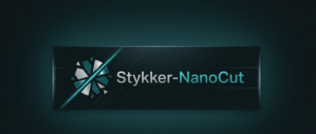
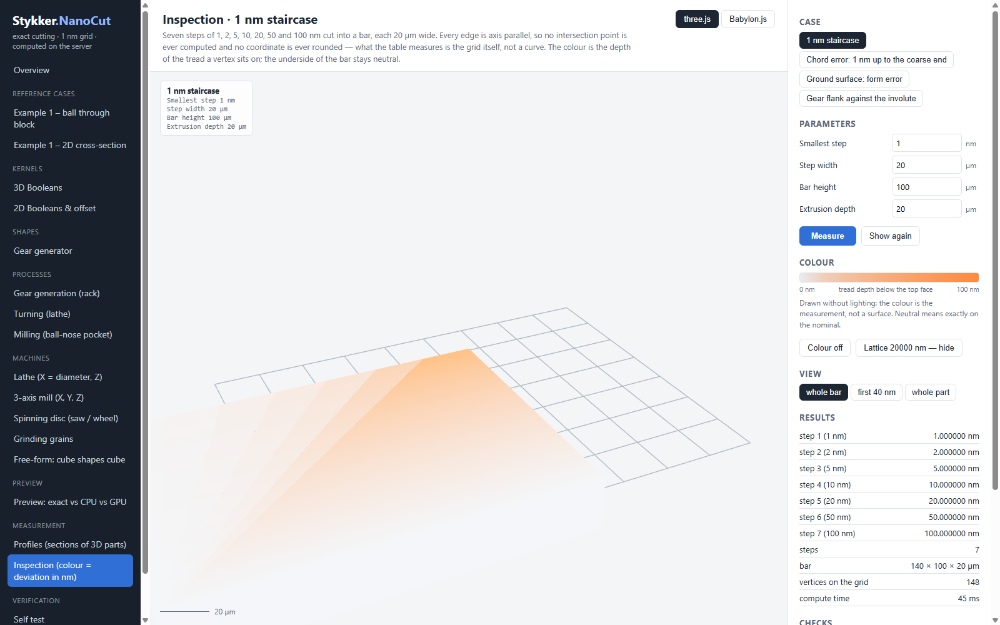

Ein Rastermikroskop für geschliffene und geformte Modelle — und was es genau kann
Stykker NanoCut schneit Volumenkörper aus Rohteil und Werkzeugbahn exakt: nicht angenähert über ein Dreiecksgitter, sondern in ganzzahligen Nanometern. Jede neue Schnittkante ist eine exakte Drei-Ebenen-Schnittstelle, die nie gerundet wird. Das heißt: ein 20-mm-Zahnrad und eine 1-nm-Stufe sind im selben Ergebnis exakt. Diese Seite sagt, wie genau das gemessen ist, wie schnell, und welche Teile davon auf die GPU gehen — und welche aus einem Grund nicht.
Woher die 0,1 Mikrometer kommen
Das Budget wird nicht als eine Zahl behauptet, sondern in vier Posten zerlegt, die man einzeln prüfen kann. Jeder Posten gehört zu genau einer Stelle im Code.
| Fehlerquelle | wie sie behandelt wird | Budget |
|---|---|---|
| Zahlen Darstellung | Int64 auf 1-nm-Raster, exakte Prädikate (Int128/Int384). Schnittpunkte werden einmal gerundet (≤ 0,71 nm) und danach nie wieder bewegt. | 0,5 nm je Achse |
| Diskretisierung | Kreise werden als einbeschriebene Vielecke erzeugt, Segmentzahl aus θ = 2·acos(1 − s/r), auf ein Vielfaches von 4 aufgerundet, damit die Achsenextrema exakt treffen. | 50 nm |
| Bahnschritt | Bogen werden als Sehnen mit Scheitelhöhe ≤ SweepNm geführt; gerade Verfahrbewegungen sind exakt (konvexe Hülle der Endpunkte). | 30 nm |
| Reserve | alles, was die drei Posten nicht brauchen | 19,5 nm |
Was gemessen wurde
Keine Schätzung: jede Zeile ist ein Test gegen eine analytische Lösung oder gegen eine zweite,
unabhängige Implementierung. |Δ| ist der gemessene Fehler, erlaubt das Budget.
| Prüfung | gemessen | exakt | |Δ| | erlaubt |
|---|---|---|---|---|
| 1-nm-Treppe: Stufenhöhen (1 … 100 nm, 7 Stufen) | 1,000000 … 100,000000 nm | 1 … 100 nm | 0 nm | 1e−9 nm |
| Beispiel 1, 3D: maximale Tiefe | 1,000000000 mm | 1 mm | 0 | 1e−4 mm |
| Beispiel 1, 3D: Nut-Vertices zur Werkzeugachse (schlechtester) | ≤ 0,6 nm | 3 mm | ≤ 0,6 nm | 1e−4 mm |
| Beispiel 1, 2D: Schnittfläche | 3,097316064 mm² | 3,097482080 mm² | 1,66e−4 mm² | 5,05e−4 mm² |
| Referenzkörper: Steinmetz, r = 3 mm | −4,7e−3 mm³ | 16r³/3 | 4,7e−3 mm³ | 1,44e−2 mm³ |
| Restvolumen gegen ManifoldSharp (gleiche Eingangspolyeder) | 3938,051198120 mm³ | 3938,051198120 mm³ | < 1e−9 mm³ | — |
| Zahnflanke z = 20, Modul 2 mm gegen die ideale Evolute (ein Lauf) | 202,4 nm | 0 | 202,4 nm | 3 000 nm |
| Sehnenfacetten: 64 Facetten, feinste Sehne 1 nm | 1,000 nm | 1 nm | 0 nm | 0,71 nm |
Der Faktor 0,71 nm bei den Sehnenfacetten ist kein Haken, sondern die Herkunft: die beiden Endpunkte einer Sehne werden je auf halbe Nanometer gerundet, und das kann die Sehnengerade um bis zu √2/2 nm verschieben. Der Faktor bei der Zahnflanke ist der Bahnschritt — die Abweichung folgt ihm und ist kein Modellfehler.
Eine Einschränkung, die es nicht gibt. Der Rand ist deterministisch — dieselbe Konfiguration sechsmal in einem Prozess ergibt sechsmal dieselben Zahlen, bei 64 wie bei 128 Facetten. Das ist als Test festgeschrieben, weil ein Betrachter, der ohne Hinweis eine von mehreren möglichen Antworten zeigt, keiner ist. Die Grenze, die es gibt, ist eine andere und ist Absicht: die Facettenzahl legt fest, wie weit der Sehnenfehlerbereich reicht, weil der Verbreiterungsfaktor den Umlauf schließen muss. Zu viele Facetten sprengen den Umlauf schon bei der feinsten Sehne, und eine Zahl, die schließt, lässt die breiteste Facette länger als den Radius werden — das ist kein Rand, der rauher wird, sondern ein Vieleck, dem Seiten fehlen. Die Seite bietet deshalb bis 128 Facetten.
Und diese eine Zeile ist keine Konstante. Der 2D-Boolesche-Kern ist nachweislich keine reine
Funktion: gleiche Eingabe, je nach Maschinenlast andere Ausgabe (GearFlankFlakeFindings.md, 4. Oktober
2026). Für Zahnfiguren heißt das: die Flankenabweichung ist eine Stichprobe aus einer Verteilung, keine Eigenschaft.
Sie ist als „schlechtester aus mehreren Läufen" zu lesen oder gar nicht — und jede Gegenüberstellung zweier
Process2-Varianten, die kleiner ist als diese Streuung, ist kein Ergebnis. Genau das trifft auch die
Zahlen, die früher in docs/processes.md stehen. Die übrigen Zeilen dieser Tabelle sind nicht betroffen:
Treppe, Sehnenfacetten und die analytischen Vergleichsfälle laufen nicht durch den Booleschen Kern.
Eine Warnung, die beim Zahn wichtig ist: unterhalb von z = 2/sin²α = 17,1 ist ein gewalztes Zahnrad unterschnitten, seine Flanke ist dann nicht die Evolute. Eine Abweichung gegen die Evolute misst dort den unterschnittenen Bereich — bei z = 10 sind das 1357 µm, eine wahre Zahl über die falsche Sache. Der Betrachter verweigert deshalb z < 18, statt eine Zahl zu zeigen, die nichts bedeutet.
Die Farbe ist die Messung
Der Betrachter unter /inspect färbt jedes Vertex nicht nach einem Material, sondern nach
seinem gemessenen Abstand zur Nennform — ohne Licht, weil eine Beleuchtung eine Zahl verfälschen würde. Die Skala
endet bei dem, was der Lauf gefunden hat, nicht bei einem festen Wert.
Drei Fälle, in dieser Reihenfolge:

/inspect. Die Farbe ist die Tiefe der
Stufe (0 … 100 nm), die Maßstabsleiste steht bei 20 µm, und die Tabelle rechts nennt die gemessenen Stufenhöhen —
1,000000 bis 100,000000 nm bei einer Abweichung von 0. Alle 148 Vertex liegen auf dem Raster.| Fall | Was die Farbe zeigt | Was man lernen soll |
|---|---|---|
| 1-nm-Treppe | Tiefe der Stufe, 1 … 100 nm | Ein Nanometer ist ein echtes Feature und kein Rauschen. Die Skala ist 100-mal feiner als das garantierte Budget. |
| Sehnenfacetten | Sehnenfehler der Facette, 1 … 23,8 nm | 64 Facetten, die sich um × 1,025 verbreitern. Gezeichnet wird nicht ein Kreis, sondern das Polyeder, das der Kernel baut. Am feinen Ende ist es bei jedem nützlichen Zoom nicht vom Kreis zu unterscheiden, am groben sind die Facetten sichtbar — beides innerhalb des Budgets. |
| Zahnflanke | Abweichung von der Evolute, vorzeichenbehaftet | Der Realteil-Fall: Nanometer auf einem Millimeter-Teil. Außerhalb des Flankenbands bleibt die Oberfläche neutral — eine Prüfung meldet nur den Bereich von Interesse. |
Ein Klick auf eine Fläche nennt die exakte Ganzzahl-Koordinate des angeklickten Vertex in Nanometern und sagt, ob es ein Rasterpunkt ist oder eine berechnete Schnittstelle. Die Zahl kommt aus dem Integer-Gitter auf dem Server, nicht aus dem float32, aus dem der Browser gezeichnet hat — bei 100 mm Absolutmaß hat ein float32 8 µm Auflösung, also tausendmal zu grob für das, was hier gezeigt wird.
Wie schnell
Alles nativ gemessen auf demselben Rechner, auf dem auch die Bench-Ergebnisseite steht. Die Balken sind logarithmiert getrennt, damit die kurzen Fälle sichtbar bleiben.
Zum Vergleich: derselbe pocket-large-Fall brauchte am Anfang 30,9 s und liegt heute bei 4,66 s — sechsmal schneller, dabei exakt. Gegen C++ Manifold ist NanoCut bei langen Aufgaben schneller (4,9 s gegen 8,2 s), bei kurzen noch nicht (1,3- bis 2,3-fach).
Wie viel auf die GPU geht
Hier ist die Antwort in zwei Teilen, und der zweite Teil ist der wichtigere: der exakte Kernel braucht die GPU nicht und bekommt sie nicht. Er läuft zu 0 % auf der GPU — das ist eine Entscheidung, keine Lücke. Auf der GPU läuft ausschließlich die Vorschau, und die kann zu 100 % dort bleiben.
| Teil | wo | gemessen | Faktor |
|---|---|---|---|
| Exakter 3D-Kern | CPU, immer | 4 655 ms | — |
| Vorschau, Höhenfeld, CPU | CPU, 16 Threads | 286 ms | 16,3× |
| Vorschau, Höhenfeld, CUDA | GPU, nur Kernel | 1,5 ms | 3 103× |
| Vorschau, Höhenfeld, CUDA | GPU, Wandzeit inkl. Transfer | 2,5 ms | 1 862× |
| Vorschau ohne Rücklesen | GPU, Feld bleibt auf dem Gerät | 1,665 ms | 2 796× |
| Konvexes Langprogramm, 24 800 Schritte | GPU gegen dasselbe Programm auf der CPU | 16,4 ms gegen 57 661,7 ms | 3 515× |
Der Preis steht nicht in einer Fußnote. Dieselbe Vorschau weicht im abgetragenen Volumen um −0,106 % von der exakten Rechnung ab: −0,090 % davon ist die Darstellung (ein Höhenfeld kann die dünne Decke über der Schneidspitze nicht halten), −0,016 % das Werkzeugmodell, +0,0005 % das Raster. Der Darstellungsanteil schrumpft nicht, wenn man das Raster verfeinert — wer auf dieser Basis ein Restmaß entscheidet, entscheidet falsch. Für eine Vorschau, der ein Mensch zusehen darf, ist das in Ordnung. Für das Ergebnis ist es nicht, und deshalb ist es das nicht.
Was schon fertig ist
- Exakter Boolescher Kern in 2D und 3D mit Int128/Int384-Prädikaten, geprüft gegen CGAL und Manifold.
- Sechs Optimierungsrunden, jede gegen die Runde davor differential getestet; pocket-large von 30,9 s auf 4,66 s, das Ergebnis auf die letzte Ziffer identisch.
- Prozesse: Drehen, Fräsen, Verzahnen, Schleifen, Rotationskörper, Ganzkörper-Verformung.
- Vorschau auf der GPU mit Kugelwerkzeug und mit konvexem Werkzeug auf einer Posenfolge, inklusive Schritt-Binning für lange Programme.
- Betrachter mit Abweichungs-Farbskala, Maßstabsleiste, 1-nm-Gitter und Vertex-Inspektor — läuft im Browser, ohne Server.
Was noch offen ist
- Schritt 4 – Schleifvorschau: Körner einer Schleifscheibe als konvexe Werkzeuge auf ihren Trochoiden,
geprüft gegen
GrindingSimulation, zuerst 60 Körner, dann die belegte Scheibe. - Schritt 5 – Zahnradvorschau (2D): Zielzahl ist die 1231,252941 mm² aus dem exakten Lauf.
- Servermodus, Teil 1: Geometrie auf dem Server, Fortschritt über SignalR, abbrechbar. Die Vorschau ist heute schon reif dafür.
- Der Rotationsfall ist teuer:
Process3.Samplesampling einen Winkel linear, was für eine 1,2-rad-Drehung eines 2,4-mm-Zahns rund 50 000 exakte Lagen verlangt — je Lage eine Hülle und eine Boolesche Operation. Das liegt auf dem kritischen Pfad für alles, was gegen den exakten Kern gemessen wird.